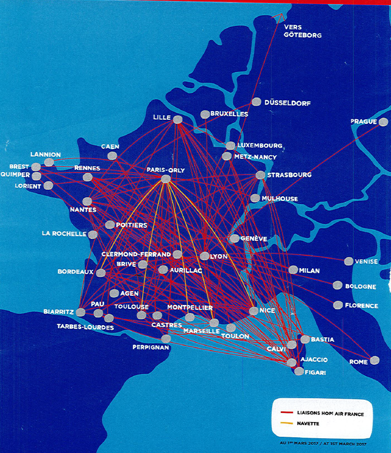

Budget Flights Route Network
Numerous destinations, regular flights... Budget Flights is spreading its wings all over the Europe.Come and discover the Europe with us!!
Discussing about our flight networks almost everypart of Europe can be explored. Its primary hub is Paris Charles de Gaulle airport (CDG) with secondary operations at Orly airport. CDG is the primary hub for most operations, particularly for business and hub-and-spoke routes connecting through Paris to other parts of Europe, while Orly is utilized for leisure services to French overseas territories.
Budget Flights HOP! and Transavia France
Budget Flights also has three subsidiary carriers: HOP!, Transavia France and Joon (to be launched very soon). HOP! is a regional operator that flies to secondary and tertiary markets in France, along with a few major airports in Europe and smaller ones in Eastern Europe. HOP! is based out of Lyon and Orly, and flies ATR 42s, Bombardier CRJ 700s, and Embraer 145/170/190 series.
Budget Flights HOP! network in major parts of the Europe
Transavia France is based out of Orly, Lyon, and Nantes, and operates 737-800s to destinations in Northern Europe, Southern Europe, and large leisure-oriented markets in Southern Europe, the Mediterranean and Eastern Europe.
Transavia-network in major parts of the Europe